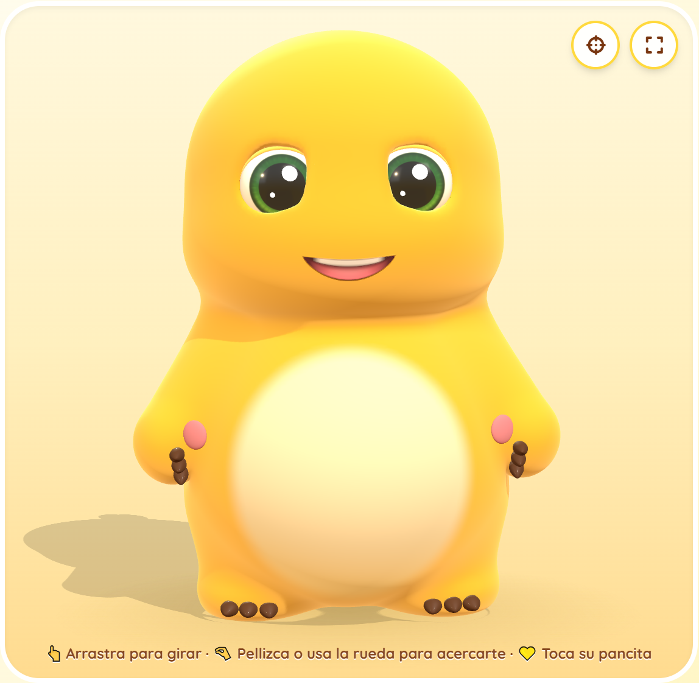

Vista 1 / 8
Vista 1: Frente estricto neutro (0°)
Silueta de gota/pera, mofletes bajos regordetes, pancita crema centrada, proporción canónica 86.
Azim: 0°
Elev: 0°
Dist: 2.35m
Modo: suave
Render 3D Nailong (WebGL2 / Playwright)

Referencia Canónica (sticker_86.webp)

Rasgos de fidelidad certificados:
- ✔ Silueta de pera/gota simétrica
- ✔ Pancita crema centrada sobre fondo amarillo
- ✔ Mofletes hinchados en tercio inferior
- ✔ 3 placas dorsales visibles en coronilla
- ✔ Pies y garras apoyadas en suelo y=0